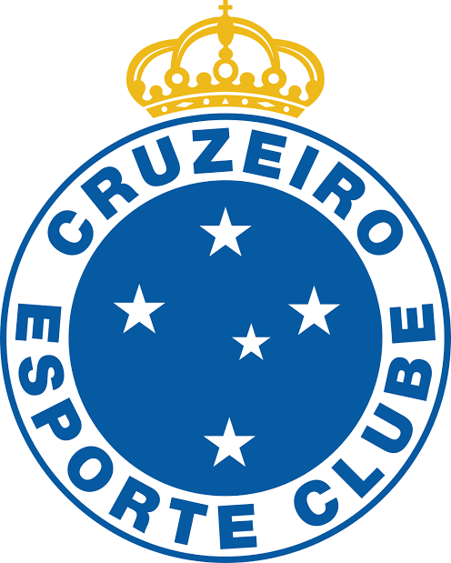
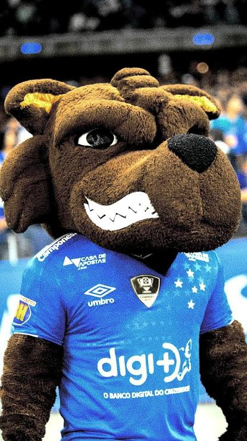

Fundação: 2 de janeiro de 1921
Fundado pela comunidade italiana de Belo Horizonte sob o nome de Societá Sportiva Palestra Itália, o clube precisou mudar de nome em 1942 devido à Segunda Guerra Mundial, adotando a constelação do Cruzeiro do Sul como símbolo máximo e mudando suas cores para azul e branco.
Conhecido nacionalmente como o "Rei de Copas", o Cruzeiro é o maior vencedor da história da Copa do Brasil, com seis conquistas. Entre os esquadrões lendários, destaca-se o time de 1976 (campeão da Libertadores), o time de 1997 e a inesquecível equipe de 2003, liderada pelo maestro Alex, que conquistou a Tríplice Coroa (Campeonato Mineiro, Copa do Brasil e Campeonato Brasileiro no mesmo ano).